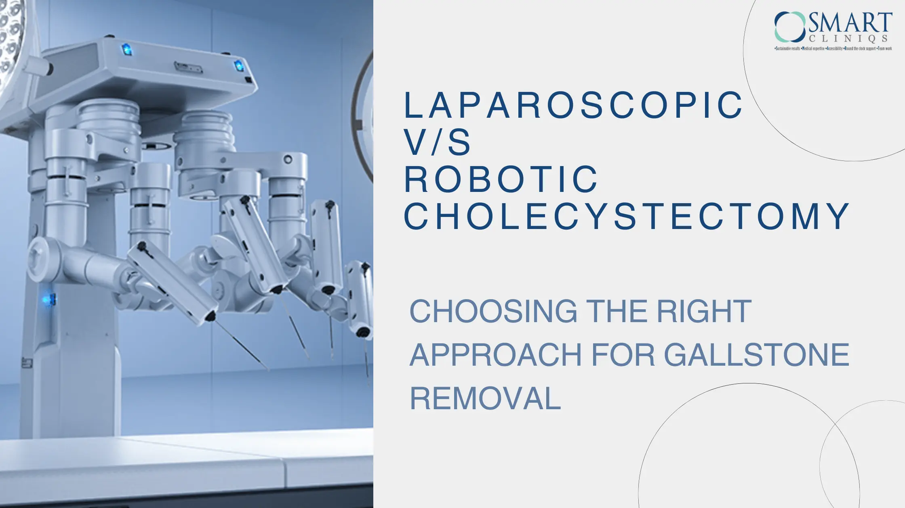

Choosing the Right Approach for Gallstone Removal
Gallstones, those hardened deposits that form in the gallbladder, can cause significant discomfort and even lead to more serious health complications. When conservative treatments prove ineffective, a cholecystectomy, or gallbladder removal, may become necessary.
Choosing the right surgical approach for gallstone removal is crucial for a successful outcome and a comfortable recovery. Two primary options available today are laparoscopic cholecystectomy and robotic cholecystectomy.
Before we explore surgical options, let’s understand gallstones and cholecystectomy.
Gallstones are small, hard deposits that form in the gallbladder, a pear-shaped organ located beneath the liver. They can be composed of cholesterol, bile pigments, or a combination of both.
Cholecystectomy is a surgical procedure that involves removing the gallbladder. It’s typically performed when gallstones cause severe pain, inflammation, or other complications.
What is Laparoscopic Cholecystectomy?
Laparoscopic cholecystectomy, often referred to as keyhole surgery, is a minimally invasive technique that has emerged as a promising option for patients requiring gallbladder removal.
It involves making small incisions in the abdomen, through which a thin, lighted tube with a camera (laparoscope) and surgical instruments are inserted. The surgeon can then visualize the gallbladder and remove it using these tools.
Benefits of Laparoscopic Cholecystectomy:
- Smaller incisions: This leads to less pain, scarring, and a faster recovery time compared to open surgery.
- Shorter hospital stay: Patients typically go home the same day or the day after surgery.
- Lower risk of complications: Laparoscopic surgery is generally associated with fewer complications than open surgery.
- Improved cosmetic outcome: The smaller incisions result in less visible scarring.
Most patients can resume normal activities within a few days of laparoscopic cholecystectomy. However, it's essential to follow your doctor's instructions regarding rest, diet, and wound care.
What is Robotic Cholecystectomy?
Robotic cholecystectomy is a minimally invasive surgical technique, that has revolutionized gallbladder removal.
This advanced procedure utilizes a robotic system controlled by a surgeon, offering enhanced precision, dexterity, and visualization compared to traditional laparoscopic surgery.
In robotic cholecystectomy, a surgeon sits at a console, operating robotic arms equipped with surgical instruments. The surgeon's movements are translated into precise actions by the robotic system, allowing for greater control and flexibility during the procedure. The robotic system also provides a magnified, three-dimensional view of the surgical field, aiding in accurate visualization and dissection.
Advantages of Robotic Cholecystectomy
- Enhanced Precision: The robotic system's precise movements and advanced instrumentation minimize the risk of complications and potential damage to surrounding tissues.
- Superior Visualization: The high-definition, three-dimensional view provided by the robotic system allows the surgeon to identify and address intricate anatomical structures with greater accuracy.
- Increased Dexterity: The robotic arms' ability to perform delicate movements and manipulate tissues with precision can lead to improved surgical outcomes, especially in complex cases.
- Reduced Trauma: Compared to open surgery, robotic cholecystectomy involves smaller incisions, resulting in less pain, scarring, and a faster recovery time.
- Minimized Blood Loss: The precision and control offered by robotic surgery often lead to reduced blood loss during the procedure.
When to Consider Robotic Cholecystectomy?
Robotic cholecystectomy may be a suitable option for patients:
- With complex gallstones or anatomical variations
- Who has undergone previous abdominal surgery
- Who desires a minimally invasive approach with potential benefits in terms of precision and outcomes
The recovery process for robotic cholecystectomy is similar to that of laparoscopic surgery. Patients can typically expect a shorter hospital stay and a faster return to normal activities.
Choosing the Right Approach for You
The decision between laparoscopic and robotic cholecystectomy depends on several factors, including
- Your overall health: If you have other health conditions or are at high risk for complications, your doctor may recommend a particular approach.
- The size and location of your gallstones: Larger or more complex gallstones may require a more advanced technique.
- Your surgeon's expertise: The experience and training of your surgeon can influence the choice of surgical method.
- Your personal preferences: Some patients may prefer one approach over the other based on their individual preferences.
Postoperative Care and Recovery
After your cholecystectomy, it's important to follow your doctor's instructions for postoperative care. This may include:
- Resting, as directed
- Taking prescribed medications
- Avoiding strenuous activity
- Following a healthy diet
- Monitoring your incision for signs of infection
Most patients can resume normal activities within a few days of surgery. However, it's essential to listen to your body and avoid overexertion.
Potential Complications and Risk Factors
Laparoscopic and robotic cholecystectomy are generally safe procedures, but like any surgery, they can carry risks.
While complications like bleeding, infection, bile duct injury, and the need for conversion to open surgery are relatively uncommon, certain factors can increase the risk. These factors include obesity, diabetes, previous abdominal surgery, and underlying medical conditions. It's essential to discuss these risks with your surgeon before deciding on the best approach for your gallbladder removal.
Factors to Consider When Choosing a Surgeon
Selecting the right surgeon is a crucial step. Here's a detailed checklist to help you make an informed decision:
- Experience and Credentials: Look for a surgeon with extensive experience, certifications, and training in performing cholecystectomies.
- Success Rates and Procedure Range: Assess the surgeon's success rates and the variety of procedures they offer to determine if they align with your needs.
- Accredited Facilities: Choose a surgeon affiliated with a reputable and accredited hospital or surgical center.
- Comprehensive Care: Look for a center that provides pre-operative assessments, expert surgical intervention, nutritional guidance, and post-operative support.
- Patient Reviews: Read patient reviews and testimonials to get a sense of the surgeon’s reputation and overall patient satisfaction.
Conclusion
Both laparoscopic and robotic cholecystectomy are highly effective surgical options for the removal of gallstones, each with its own advantages. The choice between these methods should be guided by your specific health conditions, the complexity of your case, and the expertise of your surgeon.
Laparoscopic cholecystectomy, known for its minimally invasive nature, typically involves smaller incisions and a shorter recovery time. Robotic cholecystectomy, on the other hand, offers enhanced precision through advanced robotic technology, which may be beneficial for more complex cases.
It's essential to have a thorough discussion with your healthcare provider to evaluate the suitability of each approach based on your circumstances, including any underlying health issues, previous surgeries, and personal preferences. By carefully considering the differences between laparoscopic and robotic cholecystectomy, you will be able to make a well-informed decision that aligns with your needs and goals, ultimately contributing to a more successful surgical outcome and a smoother recovery.
Ready to make an informed decision about your gallstone removal? Consult with the best gallbladder surgeon in Delhi today to discuss your options and ensure a smooth recovery!
Back to Blog